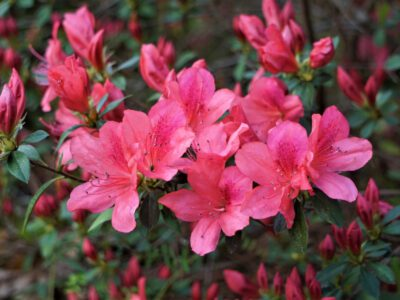
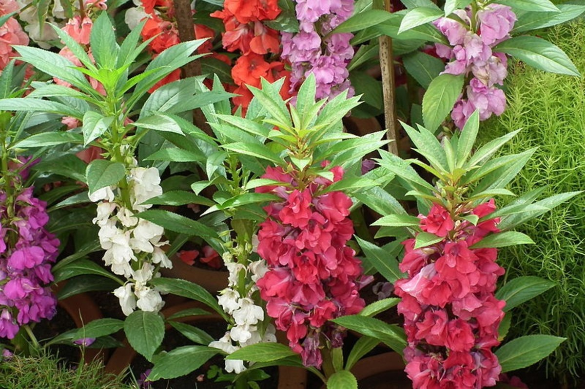

Azalea

Often referred to as "the royalty of the garden," these elegant
flowers are known for their outstanding colors and foliage.
With thousands of varieties ro choose from, Azaleas require
little maintenance once planted and can be brought inside
to make a fabulous bouqet.
Balsam

Bring the tropics to your garden with a Balsam plant.
Easy to care for, ot thrives in shadier spots, can tolerate
heat and gandle damp soil. Flowers come in almost every
color of the rainbow, including red, orange, yellow, violet, white and pink.